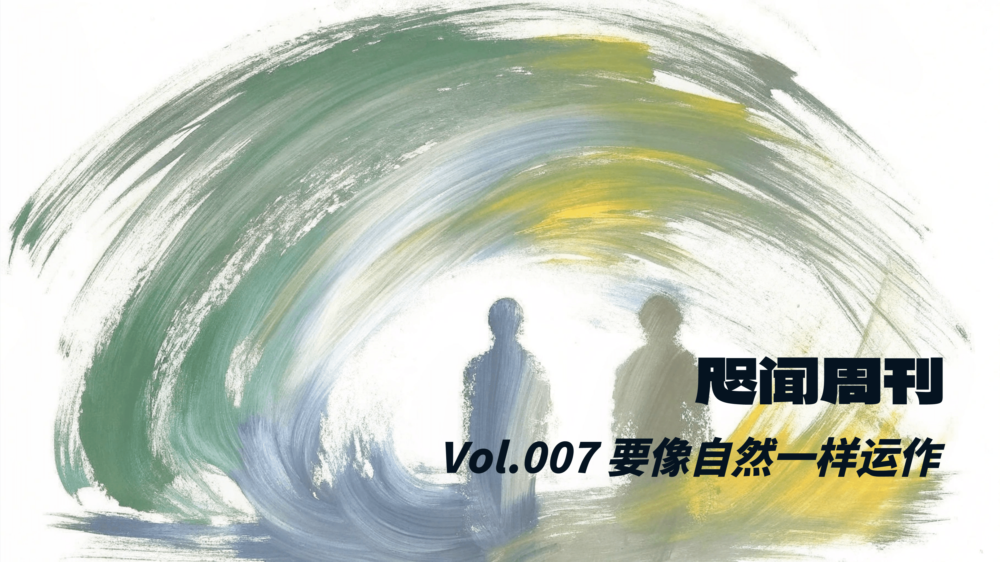
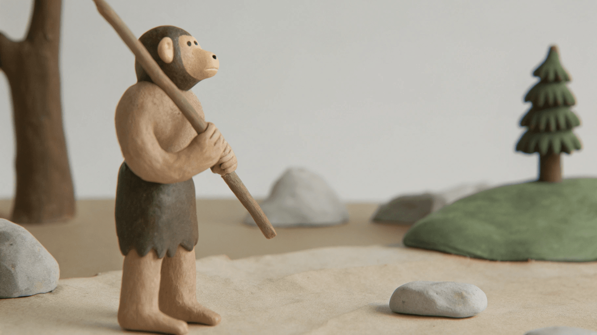
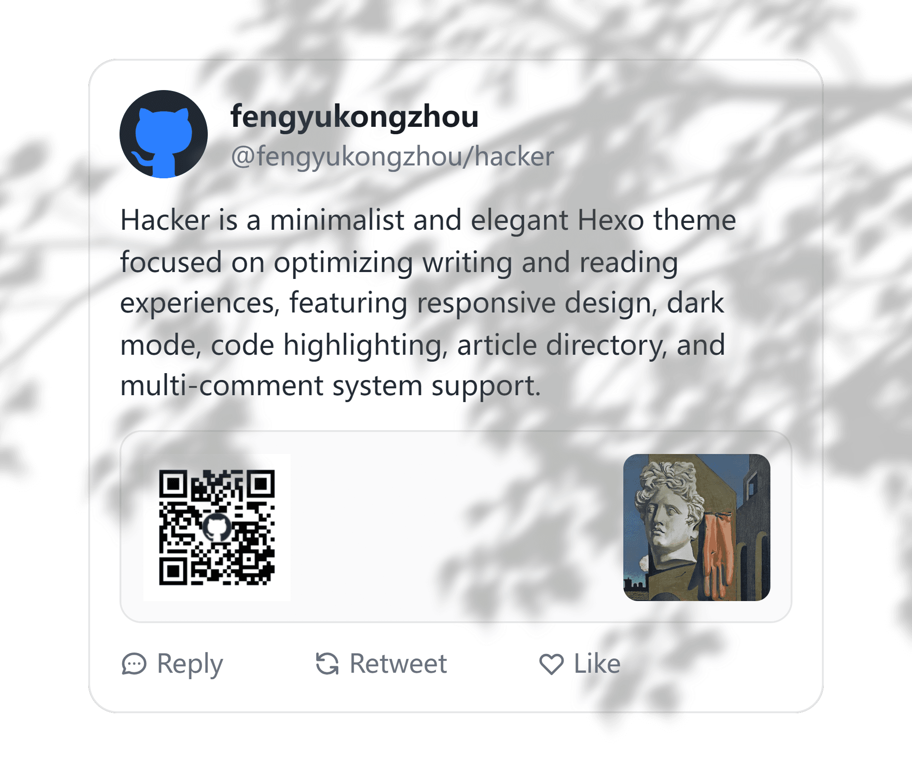
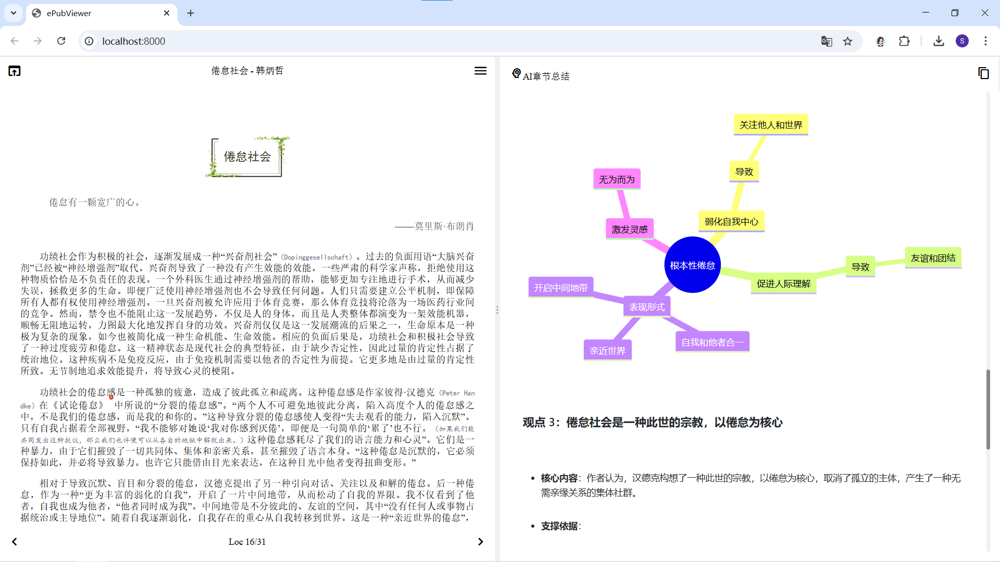

The Chinese artistic attitude toward nature is not imitative, but functional. That is to say, Chinese painting does not seek to accurately depict nature; rather, it aims to operate like nature.
—— Shanzhai: Deconstruction in Chinese, Byung-Chul Han
👋 Editor's Note
My biggest takeaway from reading The Burnout Society was a sudden awakening to my current state of being: a condition where I want to do everything but lack the desire to take anything seriously; an existence resembling three buffet meals a day; a state akin to constantly being on guard against predators on the savanna. Byung-Chul Han argues that multitasking represents a regression, noting that this form of attention management is an essential wilderness survival skill.
Haruki Murakami once mentioned he doesn't use notebooks, preferring to let his memory naturally filter things out. For me, however, such natural selection would likely result in forgetting 90% of the information I consume. Therefore, mindlessly scrolling on my phone in my free time is clearly a disservice to my brain.
Reviewing my recent notes, even though I don't excerpt everything, the final output still feels chaotic and blurry. I have to admit it lacks structure, but do I really want it to be structured? Given how things are, I can only hope it operates like nature.
🐎 The Paddock
🎨 Principles of Design
The Principle of Proximity
Group related elements together to form visual units, avoiding isolation (e.g., placing a name and job title close to each other to form a single group).
Core Objectives:
- Organization: Establish information logic through grouping to improve readability and memory retention.
- Aesthetics: Optimize white space to enhance the page's sense of tidiness.
Implementation Methods:
- Visual Flow Analysis: Observe the user's reading path (where they start → how they move → where they end) to ensure logical continuity.
- Element Grouping:
- Use the "squint test" to count the elements on a page. If there are more than 3-5, related items need to be merged.
- Strengthen intra-group associations by reducing spacing, adding divider lines, or using card-based layouts.
Pitfalls to Avoid:
- Isolated Elements: Prevent too many unrelated, independent items on the same page.
- Abuse of White Space:
- Avoid using the same spacing between different groups as within them (e.g., the gap between a heading and body text should not be greater than the line spacing within the body text).
- Do not arbitrarily place elements in corners or the center simply to fill white space.
- False Associations: Ensure headings, charts, etc., strictly align with their corresponding content to avoid misleading proximity.
The Principle of Alignment
Nothing should be placed on the page arbitrarily. Every item should have a visual connection with something else on the page.
Core Objectives:
- Unify and organize the page.
- Establish a visual "personality" (elegant, formal, fun, or serious).
Implementation Methods:
- Pay careful attention to where you place elements.
- Always find an element to align with, even if they are physically far apart.
Pitfalls to Avoid:
- Avoid mixing multiple text alignments on the same page.
- Do not default to centered alignment.
The Principle of Repetition
Repeat visual elements of the design throughout the piece. You can repeat colors, shapes, textures, spatial relationships, line thicknesses, fonts, sizes, graphic concepts, etc.
Core Objectives:
- Enhance visual appeal.
- Improve readability and consistency.
Implementation Methods:
- Emphasize existing repetitions.
- Create new repetitive elements.
Pitfalls to Avoid:
- Excessive repetition causing visual fatigue (like wearing entirely red accessories, ruining contrast).
- Repetition must be balanced with contrast.
- Avoid robotic repetition; retain a sense of "breathing room" in the design.
The Principle of Contrast
Different elements on a page must contrast sharply to draw the reader's eye.
Core Objectives:
- Enhance the page's visual appeal → Improve readability.
- Establish a clear hierarchy of information → Guide the logical flow of the eye.
Implementation Methods:
- Element differentiation: Font / line weight / color / shape / size / spacing.
- The Rule of Intensity: You must create a stark contrast (elements should be either exactly the same or entirely different).
- The Grandfather Analogy: Just like touch-up paint requires repainting the whole wall, "almost the same = ineffective contrast."
Pitfalls to Avoid:
- Ambiguous contrast (e.g., dark brown vs. black, thin line vs. slightly thicker line).
- Mixing similar fonts (e.g., pairing two serif fonts).
- Timidity in execution (being conservative when contrast is needed).
—— The Non-Designer's Design Book, Robin Williams
🐒 Shanzhai (Copycat Culture)

Remember, professional designers constantly "borrow" ideas; they are always searching for inspiration. If you are designing a flyer, find one you genuinely love and adopt its layout. Simply substitute your own text and images, and you transform someone else's flyer into your own unique design. Similarly, find a business card you like and adapt it for your own business. Find a newsletter you admire, tweak it, and it becomes your own newsletter design. Through this process of adaptation, it gradually evolves into your own distinct design. This is how we all work.
—— The Non-Designer's Design Book, Robin Williams
Though nature lacks the gift of deliberate invention, it is actually more creative than the smartest human beings. High-tech products are often knockoffs of nature's creations. Nature's creativity stems from continuous processes of variation, combination, and mutation. Evolution itself follows a pattern of constant transformation and adaptation. If the Western world dismisses shanzhai as mere fraud, plagiarism, and intellectual property infringement, it will never grasp the inherent creativity within it.
—— Shanzhai: Deconstruction in Chinese, Byung-Chul Han
This shift in perspective suggests that evolution is more akin to a quintessential treasure hunter than a mere optimizer. That is to say, the accumulation of novelty and diversity is a hallmark feature of evolution. Natural evolution has amassed a variety of ways to shape life on Earth; the branches of the tree of life continually bifurcate from the roots, expanding outward while collecting new stepping stones of life. Not all stepping stones survive, but they indeed serve as crucial links leading to the birth of new species.
—— Why Greatness Cannot Be Planned, Kenneth O. Stanley and Joel Lehman
The original, pre-existing framework is foreign to East Asian culture. This mindset perhaps explains why Asians have far fewer reservations about cloning than Europeans do. Hwang Woo-suk, the South Korean biologist who captured global attention in 2004 for his cloning experiments, is a Buddhist. He had many Buddhist followers who strongly supported him. In contrast, Christians fervently urged a ban on human cloning. Hwang justified his cloning experiments using his religious beliefs: "I am a Buddhist, and I have no philosophical reservations about cloning. As we all know, the foundation of Buddhism is the cycle of life completed through reincarnation. I believe that, to some extent, cloning technology for therapeutic purposes reopens the cycle of life."
—— Shanzhai: Deconstruction in Chinese, Byung-Chul Han
💻 The Console
🖋️ Blog Styling

After reading a few design books, I started feeling like everything I looked at was visually "wrong," so I continued tweaking the styles of my Hexo blog theme:
- Added a "Back to Top" button.
- Beautified the styling for the table of contents, code blocks, and blockquotes.
- Added a pop-up style for footnotes.
- Set up an automatic italic style recognition for Chinese and English content (English text appears in italics, while Chinese text renders in KaiTi font).
- Utilized the plugins hexo-graph and hexo-filter-mermaid-diagrams to add statistical charts (like heatmaps) to the archive page, and enabled Mermaid diagram previews within articles.
🤖 ChapterAI
This is an open-source application that summarizes EPUB files chapter by chapter. I added a copy feature to the project and tweaked a few details along the way:
- Fixed garbled Chinese characters in the command line interface.
- Changed the API calling method in the code to the standard OpenAI format, as I wanted to use the Gemini API (you can refer to this video for API proxy setup).
- Enhanced the prompts to prevent English quotation marks within Chinese Mermaid statements from breaking the preview.
The lesson learned here is to thoroughly double-check the paths in the .gitignore file before pushing to GitHub to prevent API keys from leaking (GitGuardian will email you an alert).
For an example of the results, check out this article, where I used the gemini-2.0-flash-exp model to summarize The Burnout Society chapter by chapter.
